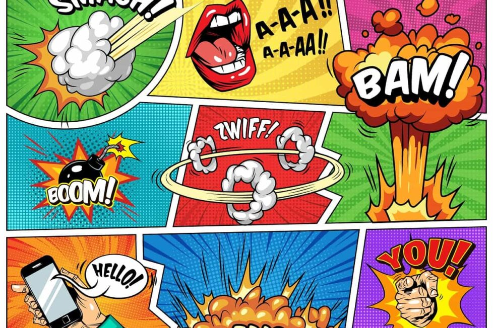

- Anime
- Género de animación de origen japonés que se caracteriza por un grafismo crudo y argumentos que frecuentemente tratan temas fantásticos o futuristas
- Comics
- Relato o historia explicada mediante viñetas o recuadros que contienen ilustraciones y en el que algunas o todas las viñetas pueden contener un texto más o menos breve
- Manga
- Manga son historias ilustradas e impresas.

Comics
- DC Comics
- Marvel
DC Comics es una editorial de cómics estadounidense. Forma parte de DC Entertainment, una de las empresas que conforman Warner Bros. Entertainment, la cual a su vez es propiedad de Warner Bros. Discovery. Fue fundada en 1934 bajo el nombre National Allied Publications, para luego tomar el nombre de DC Comics en 1937.
Marvel Worldwide, Inc., conocida como Marvel Comics, es una editorial de historietas estadounidense creada en 1939, inicialmente con el nombre de Timely Publications. Entre sus personajes emblemáticos del género superheroico se encuentran Spider-Man, Wolverine, X-Men, Capitán América, Iron Man, Hulk, Thor, Los 4 Fantásticos, Daredevil, Punisher, Los Vengadores, entre otros. A partir de los años 1990,
compañía se posicionó como una de las principales editoriales de cómics del país. El 31 de agosto de 2009, The Walt Disney Company compró Marvel Entertainment por cerca de 4 000 millones de dólares, fusionándose con esta el 1 de enero de 2010
Manga
- Toie Animation
- Mangaca
Toei Animation Co., Ltd (東映アニメーション株式会社 Tōei Animēshon Kabushiki-gaisha?)
es un estudio de animación japonés propiedad de la empresa Toei Company,
Limited.
Ha creado varias series de televisión y películas y ha adaptado mangas
como series animadas, muchas populares en todo el mundo.
Toei es accionista de la cadena japonesa de televisión
por satélite anime Animax junto con otros estudios de animación y productoras,
como Sunrise, TMS Entertainment y Nihon Ad Systems Inc.
La empresa tiene su sede en Ohizumi Studio en Nerima, Tokio.

Mangaka (漫画家? lit. artista de cómics) es la palabra japonesa designada para referirse al creador de una historieta o cómic. Fuera de Japón, principalmente en Occidente, la palabra se usa para referirse a autores de manga. La palabra está compuesta por el prefijo manga que quiere decir "cómic" y el sufijo -ka que es un agregado y quiere decir "creador de", dándole a la palabra un grado honorífico que indica maestría. El mangaka de un título, solamente lo plasma en manga
Anime
- Dragon Ball Z
- Naruto
Dragon Ball Z[c] is a Japanese anime television series produced by Toei Animation. Part of the Dragon Ball media franchise, it is the sequel to the 1986 Dragon Ball anime series and adapts the latter 325 chapters of the original Dragon Ball manga series created by Akira Toriyama, which ran in Weekly Shōnen Jump from 1988 to 1995. The series aired in Japan on Fuji TV from April 1989 to January 1996 and was later dubbed for broadcast in at least 81 countries worldwide

Naruto (ナルト?), romanizada como NARUTO, es una serie animada de origen japonés basada en el manga del mismo nombre, escrito e ilustrado por Masashi Kishimoto. La obra narra la historia de un ninja huérfano adolescente llamado Naruto Uzumaki, cuyos padres murieron en el ataque del Zorro Demonio de Nueve Colas, y quien aspira a convertirse en Hokage (líder de su aldea) con el propósito de ser reconocido como alguien importante dentro de la aldea y entre sus compañeros.